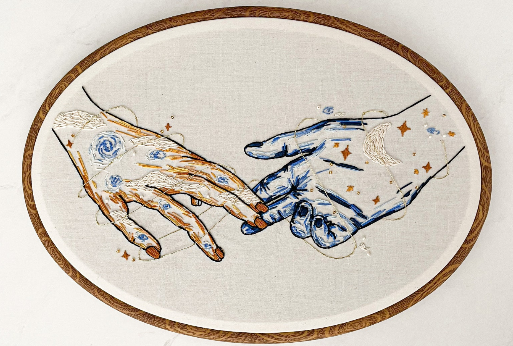

🌱 thought clippings on community housing 🌱
A tale as old as time: someone joins a community, quickly falls for someone they meet there, and starts dating them. I’ve seen this turn out great, and I’ve also seen it end in painful ways that almost destroyed the house they lived in.
The SF Zen Center actually has a rule for residents that they can’t start dating someone in the community until they’ve both lived there for at least six months. Caltech has a similar rule -- not officially, but encouraged through social pressure -- that upperclassmen can’t date frosh during their first quarter of school. (They also encourage frosh not to date each other, though this is harder to enforce.) When I’ve crushed on housemates, I’ve always waited until we’ve lived together for at least three months before considering making a move, and in almost every case I got to know them well enough to stop being interested.
Though I believe dating a housemate is risky and should be done with care, I’m not writing a post saying you shouldn’t do it -- it often turns out really well! I know of five couples that started dating after living together at The Village in the last four years: one broke up quickly and continued awkwardly living together for several months, one broke up after a year and continued to be friends and housemates, one broke up after a year at a point where they were already no longer housemates, and two have lived together and been a big part of each other's lives for years.

Community is an amazing place to meet like-minded people and grow close over day-to-day interactions, and many people find life partners at work or school for similar reasons. But I think it’s valuable to know the risks and make risk-aware choices. Here are two things I encourage people to think about before dating someone they just met in community:
(1) you might break up, so get to know them first
Though it might not feel likely when you start dating someone, it’s very possible that you’ll break up. If you do, one (or both!) of you might need to move out, which could mean losing access to your community. This is a risk regardless of when you start dating, but the benefit of waiting is you will learn more about a potential partner before taking this risk. I see two main benefits to this:
First, a fresh crush is full of projection -- you don’t know them well yet, so you fill in the gaps with the best possible version of them. Living with someone for three to six months is a great way to learn about their ugly bits, the things that might annoy you, the things that might be incompatibilities for dating. If you still want to date them after three months, I would expect there’s a higher chance that you’d stay together for a while.
A second benefit of getting to know someone better first is you can get a better sense of how they’d act in a breakup. Could you both be able to stay? Could you end up in a deep conflict that hurts your whole community? Communities are full of small opportunities for conflict, and seeing how a potential partner handles that will show you a lot.
(2) dating takes up time, so prioritize investing in housemate relationships
When people start dating, they often like to spend a lot of time with each other. Pulled to each other by new relationship energy and the comfort of being around a loved one, they might spend a lot of time with each other and less time with others in the community. This is likely to happen regardless of when you start dating, but the first few months of living in a community is also a crucial time for making friends and building social capital. These are the times when housemates form first impressions of you and are more interested in getting to know you. It’s always possible to invest more in those relationships later, but I think people underestimate how much easier it is in these first few months, and being distracted by a new partner that lives with you can make social integration into a community much harder.
It’s also worth considering how this affects someone if they’re new to the house and you are not. You already had time to invest in your relationships with people, and they haven’t yet. Giving new people a chance to settle in before spending a lot of time alone with you can help set them up for success.
---
know the risks, so you can make risk-aware choices
I want to be really clear: I’m not saying to never follow through on exciting crush feelings after a move-in. I know a couple that started hooking up days after living together and are still happily together years later. Dating a housemate can be wonderful, waiting months to act on feelings can be torturous, and I don’t think hard rules are helpful here.
For those who do choose to date shortly after moving into a community, I hope these musings can help inspire ideas to mitigate risk, like spending extra effort building 1:1 relationships with non-partner housemates or cocreating a breakup plan.
I love how communities facilitate close relationships, and I am a strong believer that it’s worth the risks of messiness to have close relationships in community. I also believe it’s worth investing in skills and practices to help these relationships be more sustainable and less painful in the long run, and considering the impact of dating shortly after move-in can make a huge difference.
This is part of a multi-post series on community living romance. I currently have one more post planned, about the social and political dynamics of couples acting as a unit in communal living. If you have thoughts on dating in community that you want to share, please reach out!